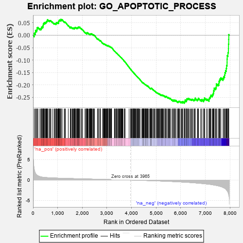
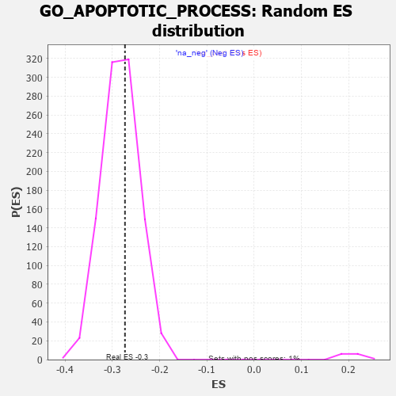

| | | Dataset | 7d |
| Phenotype | NoPhenotypeAvailable |
| Upregulated in class | na_neg |
| GeneSet | GO_APOPTOTIC_PROCESS |
| Enrichment Score (ES) | -0.2732413 |
| Normalized Enrichment Score (NES) | -0.9643204 |
| Nominal p-value | 0.61094224 |
| FDR q-value | 0.9085541 |
| FWER p-Value | 1.0 |
Table: GSEA Results Summary

Fig 1: Enrichment plot: GO_APOPTOTIC_PROCESS
Profile of the Running ES Score & Positions of GeneSet Members on the Rank Ordered List
| PROBE | GENE SYMBOL | GENE_TITLE | RANK IN GENE LIST | RANK METRIC SCORE | RUNNING ES | CORE ENRICHMENT | | 1 | TGFB3 | | | 49 | 2.654 | 0.0077 | No |
| 2 | UBE2K | | | 94 | 1.739 | 0.0112 | No |
| 3 | TRIM2 | | | 100 | 1.628 | 0.0192 | No |
| 4 | CASP6 | | | 145 | 1.300 | 0.0204 | No |
| 5 | SPI1 | | | 162 | 1.182 | 0.0246 | No |
| 6 | AXIN1 | | | 166 | 1.159 | 0.0304 | No |
| 7 | BCL3 | | | 202 | 1.047 | 0.0314 | No |
| 8 | HGF | | | 276 | 0.870 | 0.0264 | No |
| 9 | KLF11 | | | 318 | 0.788 | 0.0252 | No |
| 10 | DLL1 | | | 337 | 0.760 | 0.0269 | No |
| 11 | DAPK2 | | | 343 | 0.754 | 0.0302 | No |
| 12 | GSK3A | | | 351 | 0.745 | 0.0333 | No |
| 13 | BAX | | | 387 | 0.711 | 0.0325 | No |
| 14 | RRP8 | | | 403 | 0.699 | 0.0342 | No |
| 15 | NBN | | | 405 | 0.696 | 0.0378 | No |
| 16 | ALX4 | | | 413 | 0.686 | 0.0406 | No |
| 17 | RAD9A | | | 418 | 0.681 | 0.0437 | No |
| 18 | MLH1 | | | 423 | 0.679 | 0.0468 | No |
| 19 | RRN3 | | | 438 | 0.667 | 0.0485 | No |
| 20 | WRN | | | 469 | 0.649 | 0.0480 | No |
| 21 | LRP1 | | | 470 | 0.648 | 0.0515 | No |
| 22 | THOC1 | | | 507 | 0.627 | 0.0501 | No |
| 23 | HTRA2 | | | 527 | 0.621 | 0.0509 | No |
| 24 | PKN1 | | | 535 | 0.619 | 0.0533 | No |
| 25 | MCM2 | | | 546 | 0.614 | 0.0552 | No |
| 26 | NLE1 | | | 565 | 0.609 | 0.0561 | No |
| 27 | APEX1 | | | 577 | 0.604 | 0.0579 | No |
| 28 | MX1 | | | 578 | 0.604 | 0.0611 | No |
| 29 | PITX3 | | | 594 | 0.596 | 0.0623 | No |
| 30 | NOC2L | | | 647 | 0.578 | 0.0585 | No |
| 31 | G2E3 | | | 676 | 0.567 | 0.0579 | No |
| 32 | MRE11 | | | 693 | 0.560 | 0.0587 | No |
| 33 | ID1 | | | 719 | 0.555 | 0.0584 | No |
| 34 | RAD21 | | | 779 | 0.538 | 0.0535 | No |
| 35 | SAP18 | | | 850 | 0.519 | 0.0470 | No |
| 36 | IGBP1 | | | 869 | 0.514 | 0.0474 | No |
| 37 | HMGB2 | | | 892 | 0.507 | 0.0472 | No |
| 38 | PDE1B | | | 929 | 0.500 | 0.0451 | No |
| 39 | PDCD4 | | | 941 | 0.497 | 0.0463 | No |
| 40 | PTPA | | | 947 | 0.497 | 0.0483 | No |
| 41 | CCND2 | | | 949 | 0.496 | 0.0509 | No |
| 42 | ZPR1 | | | 967 | 0.491 | 0.0512 | No |
| 43 | DEDD2 | | | 999 | 0.484 | 0.0497 | No |
| 44 | PSMG2 | | | 1018 | 0.480 | 0.0499 | No |
| 45 | ING3 | | | 1039 | 0.476 | 0.0498 | No |
| 46 | AKT1 | | | 1040 | 0.476 | 0.0524 | No |
| 47 | YAP1 | | | 1041 | 0.475 | 0.0549 | No |
| 48 | TAF9 | | | 1046 | 0.475 | 0.0569 | No |
| 49 | MEF2C | | | 1054 | 0.473 | 0.0585 | No |
| 50 | XPA | | | 1070 | 0.469 | 0.0591 | No |
| 51 | AIFM1 | | | 1072 | 0.469 | 0.0614 | No |
| 52 | DDX47 | | | 1103 | 0.463 | 0.0599 | No |
| 53 | SRC | | | 1128 | 0.459 | 0.0592 | No |
| 54 | KMT2A | | | 1130 | 0.458 | 0.0615 | No |
| 55 | NCK2 | | | 1131 | 0.458 | 0.0640 | No |
| 56 | ERCC3 | | | 1173 | 0.451 | 0.0610 | No |
| 57 | TFDP1 | | | 1180 | 0.450 | 0.0626 | No |
| 58 | CDC73 | | | 1265 | 0.436 | 0.0538 | No |
| 59 | PARL | | | 1290 | 0.432 | 0.0530 | No |
| 60 | THOC6 | | | 1316 | 0.426 | 0.0520 | No |
| 61 | RBM10 | | | 1430 | 0.404 | 0.0392 | No |
| 62 | TAF6 | | | 1512 | 0.389 | 0.0306 | No |
| 63 | INHBB | | | 1514 | 0.388 | 0.0325 | No |
| 64 | SON | | | 1538 | 0.385 | 0.0316 | No |
| 65 | SOS1 | | | 1547 | 0.384 | 0.0326 | No |
| 66 | ERP29 | | | 1589 | 0.376 | 0.0292 | No |
| 67 | BIRC8 | | | 1615 | 0.372 | 0.0278 | No |
| 68 | CDK4 | | | 1626 | 0.370 | 0.0285 | No |
| 69 | DDB1 | | | 1642 | 0.366 | 0.0285 | No |
| 70 | BACE1 | | | 1673 | 0.360 | 0.0264 | No |
| 71 | SLTM | | | 1681 | 0.360 | 0.0274 | No |
| 72 | WWOX | | | 1688 | 0.359 | 0.0286 | No |
| 73 | HYOU1 | | | 1692 | 0.358 | 0.0301 | No |
| 74 | TPX2 | | | 1708 | 0.355 | 0.0300 | No |
| 75 | ERCC2 | | | 1712 | 0.354 | 0.0315 | No |
| 76 | ESPL1 | | | 1734 | 0.349 | 0.0306 | No |
| 77 | LRP5 | | | 1769 | 0.342 | 0.0279 | No |
| 78 | C1D | | | 1777 | 0.341 | 0.0288 | No |
| 79 | FNIP1 | | | 1798 | 0.338 | 0.0280 | No |
| 80 | ABR | | | 1812 | 0.335 | 0.0281 | No |
| 81 | MSH2 | | | 1819 | 0.334 | 0.0291 | No |
| 82 | SGPL1 | | | 1820 | 0.334 | 0.0308 | No |
| 83 | NOA1 | | | 1832 | 0.332 | 0.0312 | No |
| 84 | GATA4 | | | 1837 | 0.330 | 0.0324 | No |
| 85 | TCF7 | | | 1848 | 0.328 | 0.0328 | No |
| 86 | NUP62 | | | 1871 | 0.324 | 0.0317 | No |
| 87 | PAK3 | | | 1889 | 0.322 | 0.0311 | No |
| 88 | CUL3 | | | 1893 | 0.321 | 0.0325 | No |
| 89 | CUL5 | | | 1947 | 0.314 | 0.0271 | No |
| 90 | BRSK2 | | | 1979 | 0.308 | 0.0247 | No |
| 91 | RAF1 | | | 2011 | 0.303 | 0.0222 | No |
| 92 | BMP7 | | | 2107 | 0.290 | 0.0112 | No |
| 93 | JADE1 | | | 2141 | 0.286 | 0.0084 | No |
| 94 | DDX42 | | | 2151 | 0.284 | 0.0087 | No |
| 95 | SYK | | | 2186 | 0.278 | 0.0057 | No |
| 96 | MEIS3 | | | 2188 | 0.278 | 0.0071 | No |
| 97 | C1QBP | | | 2189 | 0.278 | 0.0086 | No |
| 98 | UTP11 | | | 2195 | 0.277 | 0.0094 | No |
| 99 | ATAD5 | | | 2197 | 0.277 | 0.0108 | No |
| 100 | TRAP1 | | | 2219 | 0.274 | 0.0094 | No |
| 101 | CREB1 | | | 2243 | 0.269 | 0.0078 | No |
| 102 | EAF2 | | | 2278 | 0.263 | 0.0048 | No |
| 103 | GSKIP | | | 2304 | 0.259 | 0.0029 | No |
| 104 | REST | | | 2308 | 0.259 | 0.0038 | No |
| 105 | UBE4B | | | 2313 | 0.258 | 0.0047 | No |
| 106 | ANO6 | | | 2339 | 0.255 | 0.0028 | No |
| 107 | FAF1 | | | 2340 | 0.255 | 0.0041 | No |
| 108 | DOCK8 | | | 2341 | 0.254 | 0.0055 | No |
| 109 | MIF | | | 2357 | 0.252 | 0.0048 | No |
| 110 | SIN3A | | | 2361 | 0.251 | 0.0058 | No |
| 111 | PPID | | | 2376 | 0.249 | 0.0053 | No |
| 112 | HIPK2 | | | 2389 | 0.247 | 0.0050 | No |
| 113 | OMA1 | | | 2408 | 0.244 | 0.0039 | No |
| 114 | KDM1A | | | 2447 | 0.237 | 0.0002 | No |
| 115 | PIGT | | | 2450 | 0.236 | 0.0012 | No |
| 116 | SHF | | | 2455 | 0.235 | 0.0019 | No |
| 117 | ZC3H8 | | | 2486 | 0.229 | -0.0008 | No |
| 118 | MELK | | | 2499 | 0.227 | -0.0012 | No |
| 119 | VAV3 | | | 2614 | 0.210 | -0.0151 | No |
| 120 | BAG3 | | | 2620 | 0.209 | -0.0146 | No |
| 121 | WDR92 | | | 2652 | 0.206 | -0.0176 | No |
| 122 | XKR6 | | | 2655 | 0.205 | -0.0168 | No |
| 123 | MITF | | | 2659 | 0.205 | -0.0161 | No |
| 124 | PHB2 | | | 2712 | 0.197 | -0.0219 | No |
| 125 | SLIT2 | | | 2724 | 0.195 | -0.0223 | No |
| 126 | DIP2A | | | 2732 | 0.193 | -0.0222 | No |
| 127 | CUL1 | | | 2735 | 0.193 | -0.0214 | No |
| 128 | BECN1 | | | 2828 | 0.179 | -0.0326 | No |
| 129 | PA2G4 | | | 2840 | 0.177 | -0.0331 | No |
| 130 | NR2E1 | | | 2844 | 0.177 | -0.0326 | No |
| 131 | DAPK3 | | | 2880 | 0.169 | -0.0363 | No |
| 132 | CUL2 | | | 2882 | 0.169 | -0.0355 | No |
| 133 | PDCD5 | | | 2885 | 0.169 | -0.0349 | No |
| 134 | FGFR2 | | | 2895 | 0.167 | -0.0352 | No |
| 135 | RBM5 | | | 2910 | 0.164 | -0.0362 | No |
| 136 | ERO1A | | | 2925 | 0.162 | -0.0371 | No |
| 137 | ACVR1 | | | 2932 | 0.161 | -0.0371 | No |
| 138 | BTK | | | 2958 | 0.156 | -0.0395 | No |
| 139 | MTCH1 | | | 2966 | 0.155 | -0.0396 | No |
| 140 | SHB | | | 2974 | 0.154 | -0.0397 | No |
| 141 | RRP1B | | | 2986 | 0.152 | -0.0404 | No |
| 142 | UNC5C | | | 2997 | 0.150 | -0.0409 | No |
| 143 | WNT4 | | | 3023 | 0.146 | -0.0434 | No |
| 144 | BRCA2 | | | 3024 | 0.146 | -0.0426 | No |
| 145 | PIAS4 | | | 3034 | 0.145 | -0.0430 | No |
| 146 | LEF1 | | | 3037 | 0.144 | -0.0425 | No |
| 147 | UFL1 | | | 3041 | 0.144 | -0.0422 | No |
| 148 | BIRC6 | | | 3047 | 0.143 | -0.0421 | No |
| 149 | MAEA | | | 3048 | 0.143 | -0.0413 | No |
| 150 | HDAC1 | | | 3086 | 0.138 | -0.0454 | No |
| 151 | TIGAR | | | 3091 | 0.138 | -0.0452 | No |
| 152 | LHX3 | | | 3092 | 0.138 | -0.0445 | No |
| 153 | CUL4A | | | 3097 | 0.137 | -0.0443 | No |
| 154 | AIMP1 | | | 3105 | 0.136 | -0.0445 | No |
| 155 | GPX1 | | | 3109 | 0.135 | -0.0442 | No |
| 156 | OGG1 | | | 3135 | 0.132 | -0.0467 | No |
| 157 | SFRP5 | | | 3154 | 0.129 | -0.0484 | No |
| 158 | ERN2 | | | 3160 | 0.129 | -0.0484 | No |
| 159 | AHR | | | 3175 | 0.126 | -0.0496 | No |
| 160 | AKTIP | | | 3178 | 0.125 | -0.0492 | No |
| 161 | TM2D1 | | | 3186 | 0.124 | -0.0494 | No |
| 162 | TRIO | | | 3192 | 0.123 | -0.0494 | No |
| 163 | SMAD3 | | | 3303 | 0.105 | -0.0634 | No |
| 164 | PARP2 | | | 3316 | 0.103 | -0.0644 | No |
| 165 | CFDP1 | | | 3332 | 0.099 | -0.0659 | No |
| 166 | UBE2O | | | 3348 | 0.097 | -0.0673 | No |
| 167 | DDX3X | | | 3388 | 0.091 | -0.0720 | No |
| 168 | GAS2 | | | 3392 | 0.090 | -0.0719 | No |
| 169 | MED1 | | | 3405 | 0.089 | -0.0730 | No |
| 170 | TRAIP | | | 3408 | 0.088 | -0.0728 | No |
| 171 | SARM1 | | | 3432 | 0.086 | -0.0754 | No |
| 172 | ATG3 | | | 3471 | 0.081 | -0.0800 | No |
| 173 | LDHA | | | 3479 | 0.080 | -0.0805 | No |
| 174 | CDK5 | | | 3480 | 0.080 | -0.0800 | No |
| 175 | UFM1 | | | 3506 | 0.077 | -0.0829 | No |
| 176 | HDAC3 | | | 3528 | 0.072 | -0.0853 | No |
| 177 | PIN1 | | | 3543 | 0.069 | -0.0868 | No |
| 178 | PRDX5 | | | 3547 | 0.068 | -0.0868 | No |
| 179 | EXOC5 | | | 3574 | 0.064 | -0.0899 | No |
| 180 | LCMT1 | | | 3576 | 0.063 | -0.0897 | No |
| 181 | MAPK3 | | | 3589 | 0.062 | -0.0909 | No |
| 182 | STK25 | | | 3602 | 0.059 | -0.0922 | No |
| 183 | CBL | | | 3621 | 0.056 | -0.0943 | No |
| 184 | DIDO1 | | | 3641 | 0.053 | -0.0965 | No |
| 185 | FIS1 | | | 3654 | 0.051 | -0.0978 | No |
| 186 | NF1 | | | 3713 | 0.040 | -0.1053 | No |
| 187 | HSF1 | | | 3718 | 0.039 | -0.1056 | No |
| 188 | DAXX | | | 3722 | 0.038 | -0.1058 | No |
| 189 | CCAR1 | | | 3737 | 0.036 | -0.1074 | No |
| 190 | JAG2 | | | 3903 | 0.010 | -0.1292 | No |
| 191 | SOS2 | | | 3963 | 0.000 | -0.1369 | No |
| 192 | IGF1R | | | 3970 | -0.002 | -0.1377 | No |
| 193 | EYA1 | | | 3987 | -0.006 | -0.1398 | No |
| 194 | VPS35 | | | 3989 | -0.006 | -0.1399 | No |
| 195 | PARP1 | | | 4014 | -0.010 | -0.1430 | No |
| 196 | ACTN1 | | | 4050 | -0.016 | -0.1475 | No |
| 197 | ATG5 | | | 4051 | -0.016 | -0.1475 | No |
| 198 | PKN2 | | | 4060 | -0.017 | -0.1484 | No |
| 199 | SFRP2 | | | 4065 | -0.018 | -0.1489 | No |
| 200 | ROBO2 | | | 4066 | -0.018 | -0.1488 | No |
| 201 | DDX20 | | | 4083 | -0.021 | -0.1508 | No |
| 202 | TRAF1 | | | 4104 | -0.024 | -0.1533 | No |
| 203 | MTOR | | | 4114 | -0.025 | -0.1543 | No |
| 204 | ABL1 | | | 4125 | -0.027 | -0.1555 | No |
| 205 | MSH6 | | | 4129 | -0.028 | -0.1558 | No |
| 206 | WNK3 | | | 4153 | -0.034 | -0.1586 | No |
| 207 | HYPK | | | 4154 | -0.034 | -0.1584 | No |
| 208 | PDX1 | | | 4179 | -0.038 | -0.1614 | No |
| 209 | TIMP1 | | | 4209 | -0.043 | -0.1650 | No |
| 210 | UNC5D | | | 4217 | -0.044 | -0.1657 | No |
| 211 | FHL2 | | | 4222 | -0.046 | -0.1660 | No |
| 212 | RRAGA | | | 4223 | -0.046 | -0.1657 | No |
| 213 | PCID2 | | | 4258 | -0.051 | -0.1699 | No |
| 214 | EMC4 | | | 4263 | -0.052 | -0.1702 | No |
| 215 | NRBP2 | | | 4274 | -0.055 | -0.1712 | No |
| 216 | PSME3 | | | 4280 | -0.056 | -0.1716 | No |
| 217 | WNT11 | | | 4282 | -0.056 | -0.1714 | No |
| 218 | BAG4 | | | 4314 | -0.061 | -0.1752 | No |
| 219 | OPA1 | | | 4330 | -0.065 | -0.1768 | No |
| 220 | ARF4 | | | 4383 | -0.073 | -0.1833 | No |
| 221 | MYDGF | | | 4429 | -0.081 | -0.1888 | No |
| 222 | SYVN1 | | | 4454 | -0.085 | -0.1915 | No |
| 223 | NDRG1 | | | 4456 | -0.085 | -0.1911 | No |
| 224 | ERCC6 | | | 4464 | -0.087 | -0.1916 | No |
| 225 | XKR4 | | | 4466 | -0.087 | -0.1913 | No |
| 226 | LRRK2 | | | 4467 | -0.087 | -0.1908 | No |
| 227 | HIP1 | | | 4485 | -0.092 | -0.1926 | No |
| 228 | MEF2A | | | 4499 | -0.095 | -0.1938 | No |
| 229 | ILK | | | 4510 | -0.096 | -0.1946 | No |
| 230 | SNW1 | | | 4514 | -0.096 | -0.1944 | No |
| 231 | NTRK2 | | | 4543 | -0.104 | -0.1976 | No |
| 232 | APC | | | 4558 | -0.107 | -0.1989 | No |
| 233 | BAG6 | | | 4563 | -0.108 | -0.1988 | No |
| 234 | NISCH | | | 4568 | -0.109 | -0.1988 | No |
| 235 | SGPP1 | | | 4573 | -0.112 | -0.1987 | No |
| 236 | PDCD7 | | | 4595 | -0.117 | -0.2008 | No |
| 237 | GATA3 | | | 4614 | -0.120 | -0.2026 | No |
| 238 | ATOH1 | | | 4615 | -0.121 | -0.2019 | No |
| 239 | DLG5 | | | 4619 | -0.121 | -0.2017 | No |
| 240 | TAF10 | | | 4652 | -0.128 | -0.2052 | No |
| 241 | FGFR3 | | | 4656 | -0.129 | -0.2049 | No |
| 242 | CHMP3 | | | 4660 | -0.129 | -0.2046 | No |
| 243 | ITPR1 | | | 4661 | -0.130 | -0.2039 | No |
| 244 | ARF6 | | | 4704 | -0.140 | -0.2087 | No |
| 245 | PDIA3 | | | 4740 | -0.147 | -0.2126 | No |
| 246 | PLCG1 | | | 4770 | -0.151 | -0.2156 | No |
| 247 | PDE1A | | | 4773 | -0.152 | -0.2150 | No |
| 248 | PIM1 | | | 4776 | -0.152 | -0.2145 | No |
| 249 | RTN4 | | | 4783 | -0.154 | -0.2144 | No |
| 250 | PIM2 | | | 4789 | -0.155 | -0.2143 | No |
| 251 | SRPK2 | | | 4790 | -0.155 | -0.2134 | No |
| 252 | TERT | | | 4801 | -0.157 | -0.2139 | No |
| 253 | MTCH2 | | | 4806 | -0.158 | -0.2136 | No |
| 254 | P2RX4 | | | 4813 | -0.161 | -0.2135 | No |
| 255 | FBXW7 | | | 4816 | -0.161 | -0.2129 | No |
| 256 | SGK1 | | | 4852 | -0.168 | -0.2167 | No |
| 257 | CLU | | | 4889 | -0.174 | -0.2205 | No |
| 258 | SLIT3 | | | 4890 | -0.175 | -0.2195 | No |
| 259 | CASP1 | | | 4932 | -0.185 | -0.2240 | No |
| 260 | EP300 | | | 4941 | -0.186 | -0.2240 | No |
| 261 | PRKDC | | | 4955 | -0.189 | -0.2247 | No |
| 262 | KLF4 | | | 5005 | -0.198 | -0.2301 | No |
| 263 | DAD1 | | | 5008 | -0.199 | -0.2293 | No |
| 264 | CASP7 | | | 5038 | -0.206 | -0.2321 | No |
| 265 | PDPK1 | | | 5043 | -0.207 | -0.2315 | No |
| 266 | DDX41 | | | 5058 | -0.211 | -0.2322 | No |
| 267 | ING4 | | | 5084 | -0.221 | -0.2343 | No |
| 268 | ITSN1 | | | 5094 | -0.222 | -0.2343 | No |
| 269 | MMP9 | | | 5108 | -0.227 | -0.2348 | No |
| 270 | UBE2Z | | | 5137 | -0.234 | -0.2373 | No |
| 271 | FLCN | | | 5140 | -0.235 | -0.2363 | No |
| 272 | TBX1 | | | 5166 | -0.241 | -0.2383 | No |
| 273 | SMO | | | 5195 | -0.247 | -0.2407 | No |
| 274 | ATM | | | 5210 | -0.249 | -0.2412 | No |
| 275 | TOP2A | | | 5216 | -0.250 | -0.2405 | No |
| 276 | TMF1 | | | 5225 | -0.251 | -0.2402 | No |
| 277 | KRIT1 | | | 5248 | -0.257 | -0.2417 | No |
| 278 | PTEN | | | 5262 | -0.261 | -0.2421 | No |
| 279 | CDK1 | | | 5264 | -0.262 | -0.2408 | No |
| 280 | ERCC5 | | | 5284 | -0.268 | -0.2419 | No |
| 281 | FKBP8 | | | 5296 | -0.270 | -0.2419 | No |
| 282 | SGK3 | | | 5338 | -0.282 | -0.2458 | No |
| 283 | ELMO2 | | | 5341 | -0.283 | -0.2445 | No |
| 284 | GRIN1 | | | 5381 | -0.291 | -0.2481 | No |
| 285 | FZD5 | | | 5386 | -0.292 | -0.2471 | No |
| 286 | PRDX3 | | | 5389 | -0.293 | -0.2458 | No |
| 287 | SOX8 | | | 5404 | -0.296 | -0.2461 | No |
| 288 | LATS1 | | | 5412 | -0.298 | -0.2454 | No |
| 289 | GHITM | | | 5470 | -0.312 | -0.2512 | No |
| 290 | STIL | | | 5483 | -0.314 | -0.2511 | No |
| 291 | ACTN3 | | | 5486 | -0.315 | -0.2497 | No |
| 292 | VDR | | | 5517 | -0.325 | -0.2519 | No |
| 293 | FGFR1 | | | 5543 | -0.332 | -0.2535 | No |
| 294 | RBM25 | | | 5562 | -0.336 | -0.2541 | No |
| 295 | SPHK1 | | | 5576 | -0.339 | -0.2540 | No |
| 296 | G6PD | | | 5638 | -0.358 | -0.2601 | No |
| 297 | CASP8 | | | 5678 | -0.369 | -0.2633 | No |
| 298 | CDIP1 | | | 5684 | -0.370 | -0.2619 | No |
| 299 | MADD | | | 5686 | -0.371 | -0.2601 | No |
| 300 | TIA1 | | | 5731 | -0.386 | -0.2638 | No |
| 301 | DAP | | | 5732 | -0.386 | -0.2618 | No |
| 302 | PDCL3 | | | 5738 | -0.388 | -0.2604 | No |
| 303 | TLR2 | | | 5761 | -0.395 | -0.2612 | No |
| 304 | LAMP1 | | | 5796 | -0.404 | -0.2635 | No |
| 305 | ADA | | | 5798 | -0.405 | -0.2614 | No |
| 306 | ATG7 | | | 5858 | -0.420 | -0.2670 | No |
| 307 | HINT2 | | | 5889 | -0.431 | -0.2686 | No |
| 308 | SET | | | 5895 | -0.434 | -0.2670 | No |
| 309 | DOCK1 | | | 5908 | -0.438 | -0.2662 | No |
| 310 | STK11 | | | 5922 | -0.443 | -0.2656 | No |
| 311 | PCGF2 | | | 5943 | -0.451 | -0.2658 | No |
| 312 | ACTN2 | | | 5960 | -0.458 | -0.2655 | No |
| 313 | XBP1 | | | 6011 | -0.475 | -0.2695 | No |
| 314 | JMY | | | 6023 | -0.479 | -0.2684 | No |
| 315 | PPT1 | | | 6038 | -0.485 | -0.2677 | No |
| 316 | CALR | | | 6077 | -0.499 | -0.2700 | No |
| 317 | PLK1 | | | 6082 | -0.500 | -0.2679 | No |
| 318 | UBB | | | 6090 | -0.503 | -0.2661 | No |
| 319 | STK4 | | | 6145 | -0.518 | -0.2705 | Yes |
| 320 | ROCK1 | | | 6152 | -0.520 | -0.2685 | Yes |
| 321 | EGR1 | | | 6165 | -0.527 | -0.2673 | Yes |
| 322 | GRID2 | | | 6170 | -0.528 | -0.2650 | Yes |
| 323 | RAG1 | | | 6176 | -0.530 | -0.2628 | Yes |
| 324 | THRB | | | 6178 | -0.531 | -0.2601 | Yes |
| 325 | RGN | | | 6233 | -0.547 | -0.2643 | Yes |
| 326 | CDC42 | | | 6236 | -0.548 | -0.2616 | Yes |
| 327 | GGCT | | | 6239 | -0.550 | -0.2589 | Yes |
| 328 | VDAC2 | | | 6242 | -0.553 | -0.2562 | Yes |
| 329 | TFAP4 | | | 6254 | -0.556 | -0.2547 | Yes |
| 330 | TRAF7 | | | 6290 | -0.571 | -0.2563 | Yes |
| 331 | IFT57 | | | 6307 | -0.579 | -0.2553 | Yes |
| 332 | MIEN1 | | | 6316 | -0.582 | -0.2533 | Yes |
| 333 | BIRC3 | | | 6366 | -0.603 | -0.2565 | Yes |
| 334 | RALB | | | 6399 | -0.617 | -0.2574 | Yes |
| 335 | MALT1 | | | 6432 | -0.634 | -0.2583 | Yes |
| 336 | FANK1 | | | 6458 | -0.642 | -0.2581 | Yes |
| 337 | SOX2 | | | 6477 | -0.652 | -0.2570 | Yes |
| 338 | DYRK2 | | | 6533 | -0.677 | -0.2607 | Yes |
| 339 | STK24 | | | 6550 | -0.684 | -0.2591 | Yes |
| 340 | ROBO1 | | | 6577 | -0.699 | -0.2588 | Yes |
| 341 | CLN3 | | | 6580 | -0.699 | -0.2553 | Yes |
| 342 | RNF41 | | | 6588 | -0.703 | -0.2525 | Yes |
| 343 | RFFL | | | 6674 | -0.749 | -0.2597 | Yes |
| 344 | PAK1 | | | 6691 | -0.757 | -0.2578 | Yes |
| 345 | EGFR | | | 6708 | -0.765 | -0.2558 | Yes |
| 346 | GSK3B | | | 6719 | -0.768 | -0.2530 | Yes |
| 347 | NET1 | | | 6803 | -0.816 | -0.2596 | Yes |
| 348 | AEN | | | 6852 | -0.842 | -0.2614 | Yes |
| 349 | AHI1 | | | 6860 | -0.848 | -0.2578 | Yes |
| 350 | LRP8 | | | 6931 | -0.889 | -0.2623 | Yes |
| 351 | GHSR | | | 6937 | -0.894 | -0.2582 | Yes |
| 352 | DNM1L | | | 6963 | -0.913 | -0.2566 | Yes |
| 353 | PIM3 | | | 6964 | -0.914 | -0.2517 | Yes |
| 354 | RNF34 | | | 7040 | -0.963 | -0.2565 | Yes |
| 355 | STPG1 | | | 7087 | -0.986 | -0.2573 | Yes |
| 356 | TOX3 | | | 7150 | -1.033 | -0.2599 | Yes |
| 357 | DDX5 | | | 7152 | -1.037 | -0.2545 | Yes |
| 358 | AR | | | 7169 | -1.046 | -0.2511 | Yes |
| 359 | TSPO | | | 7194 | -1.065 | -0.2485 | Yes |
| 360 | MFN2 | | | 7208 | -1.081 | -0.2445 | Yes |
| 361 | TCHP | | | 7224 | -1.099 | -0.2406 | Yes |
| 362 | CIB1 | | | 7280 | -1.152 | -0.2417 | Yes |
| 363 | MSX2 | | | 7299 | -1.171 | -0.2378 | Yes |
| 364 | GRN | | | 7319 | -1.194 | -0.2339 | Yes |
| 365 | CYLD | | | 7333 | -1.206 | -0.2292 | Yes |
| 366 | NGEF | | | 7335 | -1.209 | -0.2229 | Yes |
| 367 | PLAC8 | | | 7355 | -1.223 | -0.2188 | Yes |
| 368 | WDR35 | | | 7357 | -1.225 | -0.2124 | Yes |
| 369 | UBC | | | 7410 | -1.274 | -0.2125 | Yes |
| 370 | SPDEF | | | 7436 | -1.313 | -0.2088 | Yes |
| 371 | CASP2 | | | 7442 | -1.322 | -0.2024 | Yes |
| 372 | KCNB1 | | | 7444 | -1.327 | -0.1954 | Yes |
| 373 | VDAC1 | | | 7512 | -1.409 | -0.1967 | Yes |
| 374 | DCC | | | 7550 | -1.470 | -0.1937 | Yes |
| 375 | GRIK2 | | | 7552 | -1.471 | -0.1860 | Yes |
| 376 | TRAF4 | | | 7573 | -1.514 | -0.1806 | Yes |
| 377 | ASNS | | | 7595 | -1.547 | -0.1751 | Yes |
| 378 | PDCD6 | | | 7630 | -1.615 | -0.1709 | Yes |
| 379 | BOK | | | 7715 | -1.817 | -0.1723 | Yes |
| 380 | CASP3 | | | 7747 | -1.902 | -0.1662 | Yes |
| 381 | ST18 | | | 7780 | -2.007 | -0.1597 | Yes |
| 382 | GRIK5 | | | 7792 | -2.044 | -0.1503 | Yes |
| 383 | TRAF6 | | | 7818 | -2.157 | -0.1420 | Yes |
| 384 | GRM4 | | | 7847 | -2.393 | -0.1329 | Yes |
| 385 | TRAF2 | | | 7861 | -2.481 | -0.1214 | Yes |
| 386 | FYN | | | 7881 | -2.622 | -0.1099 | Yes |
| 387 | CHAC1 | | | 7882 | -2.633 | -0.0958 | Yes |
| 388 | TRAF3 | | | 7886 | -2.695 | -0.0818 | Yes |
| 389 | ASIC2 | | | 7917 | -2.995 | -0.0698 | Yes |
| 390 | ARRB1 | | | 7935 | -3.377 | -0.0540 | Yes |
| 391 | TRAF5 | | | 7938 | -3.448 | -0.0358 | Yes |
| 392 | XIAP | | | 7947 | -3.696 | -0.0171 | Yes |
| 393 | DAPK1 | | | 7950 | -3.767 | 0.0028 | Yes |
Table: GSEA details [plain text format]

Fig 2: GO_APOPTOTIC_PROCESS: Random ES distribution
Gene set null distribution of ES for GO_APOPTOTIC_PROCESS